상대 프로필 · 호감 · 편지 버튼
- 테두리 없애고 그림자로 구분: 편지 버튼의 흰 테두리 1px를 뺐어요. 두 버튼 모두 파랑 기운의 옅은 그림자 대신 진한 회색 그림자 두 겹(넓게 10/24 · 가까이 2/6)이에요.
- 호감 보냄은 편지와 다른 색: 지금은 호감을 보내면 편지 버튼과 같은 연한 하늘이 돼요. 보낸 뒤는 "끝난 일"이라 다른 색으로 나눴어요.
- 서로 호감은 장미: 홈 카드 "서로 연결됨" · 마음함 "서로 호감"과 같은 장미 포인트예요.
| 안 | 보내기 전 + 편지 | 호감 보냄 + 편지 | 서로 호감 + 편지 |
|---|---|---|---|
| 지금보냄이 편지와 같은 연한 하늘 · 편지에 흰 테두리 · 서로 호감은 다시 진한 파랑 | 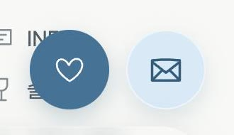 | 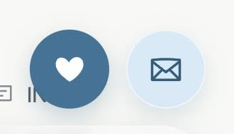 | |
| A · 편지는 연한 하늘 그대로호감 보냄 = 흰 바탕 + 장미 하트(홈 "호감 보냄"과 같은 결) · 서로 호감 = 연한 장미 + 장미 하트 | 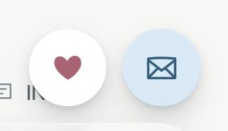 | 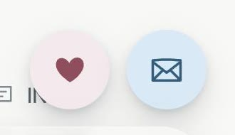 | |
| B · 편지를 흰 바탕으로편지 = 흰 바탕 + 파랑 편지 · 호감 보냄 = 회색 바탕 + 회색 하트(완전히 끝남) · 서로 호감 = 장미 바탕 + 흰 하트 | 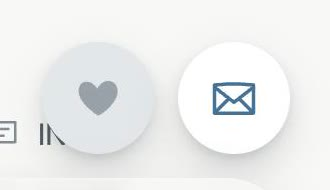 | 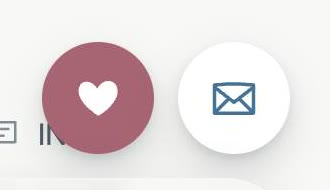 |
B · 편지 버튼 상태 새로
지금은 편지 버튼 모양이 상태와 상관없이 같아요. B 결로 호감과 같은 규칙을 썼어요: 할 수 있는 일 = 흰 바탕, 끝나고 기다리는 중 = 회색, 새로 온 것 = 장미 점, 서로 이어짐 = 장미.
| 상황 | 버튼 | 누르면 |
|---|---|---|
| 처음호감 · 편지 모두 아직 |  | 편지 쓰기 |
| 편지 보냄답장을 기다리는 중 · 호감은 아직 | 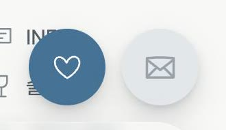 | 보낸 편지 보기 |
| 호감 · 편지 둘 다 보냄둘 다 회색 | 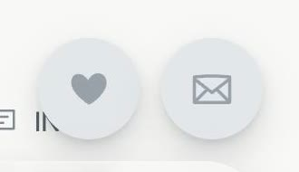 | 보낸 편지 보기 |
| 받은 편지 있음상대가 먼저 보냄 · 안 읽음은 장미 점 | 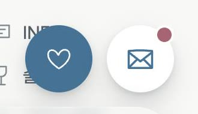 | 받은 편지 보기 |
| 서로 연결됨서로 호감 + 답장을 나눔 · 둘 다 장미 | 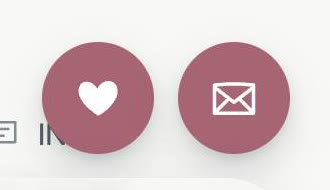 | 편지 이어가기 |
호감 보냄 · 화면 전체
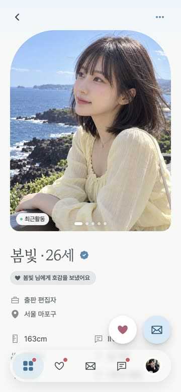
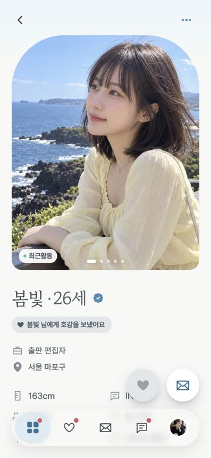